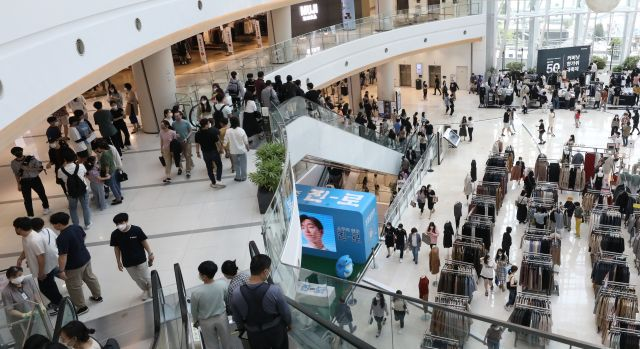

코로나 유행 정점, 위드 코로나 밀리나?
추석 연휴에도 코로나19 4차 유행의 기세가 꺾이지 않으면서 이달 중하순 전세를 반전시킬 수 있다던 정부 예측이 다시 한번 빗나갔다. 명절 여파가 본격화할 향후 2주 동안은 확진자 감소를 기대하기 어렵다는 게 중론이다.
중앙방역대책본부는 22일 0시 기준 코로나19 신규 확진자가 1720명이라고 밝혔다. 통상 확진자는 주말을 맞아 줄었다가 수요일부터 폭증하는데, 이번엔 추석 연휴의 영향으로 이 같은 휴지기가 좀 더 길어지는 것으로 풀이됐다. 전날 하루 검사 건수는 9만9473건으로 일주일 전인 지난 14일보다 4만6000건가량 적었다.
주말·연휴 효과를 걷어내면 최근의 확산세는 뚜렷이 보인다. 같은 요일끼리 비교한 결과 발표일 기준으로 지난 18일부터 21일까지 최다 확진 기록이 나흘 연속 경신됐다. 그보다 앞서 지난 12~18일 하루 평균 국내 발생 확진자는 1798.7명으로 직전 주보다 4.3% 증가했다. 특히 수도권 확진자는 12.2%나 급증해 사상 최다를 기록했다.
이로써 방역 당국의 기대도 어긋났다. 정부는 지난 7월 초 유행 추이가 이어질 시 8월 중순 2300명 수준에서 확진자 규모가 정점을 기록할 것이라고 내다봤다. 이후엔 이달 5~20일쯤 추이가 반전될 것이라고 전망을 수정했다. 결과적으로 코로나19 확산이 번번이 정부 기대를 뛰어넘은 것이다.
더욱이 대부분 지표가 추가 확산 우려를 키우고 있다. 방대본이 QR 코드를 통해 분석한 이동량은 지난달 말 이후 지속적으로 증가했다. 오후 9시 이후 수도권으로 한정하면 이달 둘째 주 이동량이 첫 주 대비 39.3%나 급증했다. 사회적 거리두기 완화 이후 모임이 늘어난 탓으로 해석된다. 신규 확진자 중 감염 경로를 아직 밝혀내지 못한 사례 비중도 이날 기준 37.2%까지 치솟았다.
명절 영향도 무시할 수 없다. 신규 확진자의 70%대 중후반을 차지해 온 수도권 감염이 연휴 기간 전국 곳곳으로 번졌을 공산이 크다. 쌀쌀해지는 날씨와 느슨해지는 방역 수위도 확진자 증가를 전망하는 이유다. 김우주 고대구로병원 감염내과 교수는 “그나마 믿을 게 백신인데 완전 접종률 80%를 넘긴 싱가포르에서도 일일 확진자가 1000명씩 나오고 있다”고 우려했다.
확진자 수 증가에도 불구하고 중증 관리에 초점을 맞출 경우 정부가 공언한 10월 이후 단계적인 일상 회복은 가시권에 있다. 방대본은 지난 5월부터 확진자 10만1285명을 확진일로부터 4주 동안 추적 관찰한 결과 백신 접종 완료 시에 77%의 중증 예방효과가 나타났다고 밝혔다. 한때 400명을 웃돌았던 위중증 환자는 이날 317명까지 줄었다. 중환자 전담치료병상 가동률도 전날 기준 48.3%로 집계됐다.
다만 미접종자를 중심으로 확산이 빠르게 진행되면 계산이 복잡해질 수도 있다. 최근 2주간 나온 만 18세 이상 확진자 2만895명 중 89.8%는 아직 접종을 완료하지 않은 상태였던 것으로 분석됐다.